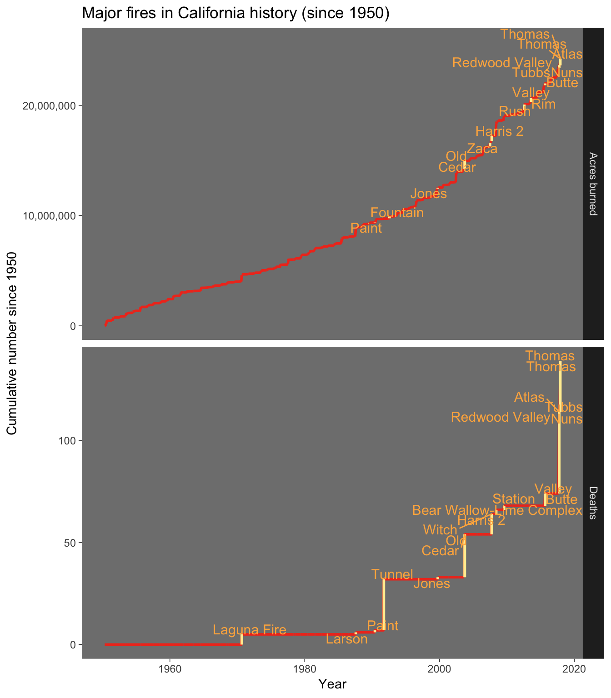
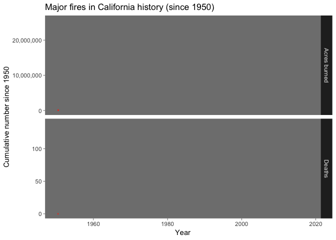

My first (very poor) attempt at a Tidy Tuesday challenge.
I found out #tidytuesday is a thing on Twitter and wanted to join! Since I had lots of free time this past week, I had lofty goals. I wanted to try out gganimate, I wanted to incorporate data from another source, and I wanted to learn and practice some new functions, like those from the purrr package. Given the data on California wildfires, my vision was an animated graph that highlighted the “big fires” in California history. It didn’t end up exactly like I’d envisioned, but nothing ever does!
I started off by reading in the data and doing a little organizing (turns out I didn’t need to do most of it).
# read in the data
fires <- read_csv("https://raw.githubusercontent.com/rfordatascience/tidytuesday/master/data/2018/2018-08-21/week21_calfire_frap.csv")
damage <- read_csv("https://raw.githubusercontent.com/rfordatascience/tidytuesday/master/data/2018/2018-08-21/cal-fire-incidents.csv")
structures <- read_csv("https://raw.githubusercontent.com/rfordatascience/tidytuesday/master/data/2018/2018-08-21/calfire_damage.csv")
cause_levs <- c( # from the data dictionary
"Lightning", "Equipment Use", "Smoking", "Campfire", "Debris",
"Railroad", "Arson", "Playing with Fire", "Miscellaneous", "Vehicle",
"Power Line", "Firefighter Training", "Non-Firefighter Training",
"Unknown/Unidentified", "Structure", "Aircraft", "Escaped Prescribed Burn",
"Illegal Alien Campfire"
)
# restrict to California data and merge all three datasets
dat <- fires %>%
filter(state == "CA") %>%
mutate(
cause = factor(cause, labels = cause_levs),
#alarm_date = parse_date(alarm_date),
#cont_date = parse_date(cont_date),
year = year_,
Name = str_to_title(parse_character(fire_name)),
`Start date` = format(alarm_date, "%B %Y")
) %>%
full_join(damage, by = c("year" = "YEAR")) %>%
full_join(structures)
I found a Wikipedia article with some numbers on the biggest and most deadly fires. Perfect for my outside data source! I used the Web Inspector in Safari to find the appropriate xpaths and found that I would just need to replace one number in the path to get each of the tables I wanted.
I had to make some changes to the data manually after I found out that not all of the Wikipedia fire names matched up to the ones in the provided data. This gave me an opportunity to use code like filter(dat, str_detect(str_to_lower(comments), "complex"),Start date== "August 1999") to find the fire I was looking for!
# function to get the data from a table from a Wikipedia article, given the
# url and the table number
wiki_table <- function(url, num) {
url %>%
read_html() %>%
html_nodes(
xpath = str_replace('//*[@id="mw-content-text"]/div/table[num]', "num", num)
) %>%
html_table(fill = TRUE) %>%
.[[1]]
}
# get the 1st, 3rd, and 4th tables and merge
wiki <- map(c("1", "3", "4"),
.f = wiki_table,
url = "https://en.wikipedia.org/wiki/List_of_California_wildfires"
) %>%
reduce(full_join) %>%
select(-Notes) %>%
# remove duplicates (first two with wrong numbers of dead)
filter(
!(Name == "Witch" & Deaths == 6),
!(Name == "Thomas" & Deaths == 1),
!(Name == "Tubbs" & Structures == "5643"),
parse_date_time(`Start date`, orders = "mY") >
min(dat$alarm_date, na.rm = T),
parse_date_time(`Start date`, orders = "mY") <
max(dat$alarm_date, na.rm = T)
) %>%
# data cleaning to merge approriately
mutate(
Name = fct_recode(Name,
"Bear Wallow-Lime Complex" = "Klamath Theater Complex",
"Marble-Cone" = "Marble Cone",
"Mcnally" = "McNally",
"Happy Camp" = "Happy Camp Complex",
"Harris 2" = "Harris",
"Redwood Valley" = "Redwood Valley Complex",
"Bel Air Fire" = "Bel Air",
"Laguna Fire" = "Laguna",
"Larson" = "Stanislaus Complex"
),
`Start date` = case_when(
Name == "Marble-Cone" ~ "August 1977",
TRUE ~ `Start date`
),
Name = as.character(Name)
) %>%
full_join(dat)
In my first attempt with gganimate I think I crashed R because I was trying to use too many datapoints. So I ended up grouping the data by month and calculating the cumulative total number of acres burned and people killed by fire.
# group by month and calculate totals
month_dat <- wiki %>%
mutate(Deaths = parse_number(Deaths)) %>%
group_by(`Start date`) %>%
summarise(
acres = sum(gis_acres, na.rm = T),
deaths = sum(Deaths, na.rm = T),
alarm = min(alarm_date, na.rm = T)
) %>%
arrange(alarm) %>%
mutate(
cum_acres = cumsum(acres),
cum_deaths = cumsum(deaths),
# I wanted to highlight the changes with the big fires so I kept
# the previous value as well
pre_acres = lag(cum_acres, 1),
pre_deaths = lag(cum_deaths, 1),
date = parse_date_time(`Start date`, orders = "mY")
) %>%
# I will need a "time" variable for the animation
# (rowid will correspond to month)
rowid_to_column() %>%
# Since I'll be facetting, I had to split the data by the two variables
gather(key = type, value = cum_num, cum_acres:pre_deaths) %>%
mutate(pre = type %in% c("pre_acres", "pre_deaths"))
I wanted a dataset with an observation each for acres burned and deaths caused, and a column each for the previous month’s value and the current month’s value. After using gather() on the appropriate variables, I had an observation for each variable at each time point, and I couldn’t figure out how to use spread() or something else to get it the way I wanted. So I did it sort of crudely:
pre_dat <- filter(month_dat, pre) %>%
rename(pre_val = cum_num) %>%
select(-pre) %>%
mutate(type = fct_recode(type, `Acres burned` = "pre_acres", Deaths = "pre_deaths"))
post_dat <- filter(month_dat, !pre) %>%
rename(post_val = cum_num) %>%
select(-pre) %>%
mutate(type = fct_recode(type, `Acres burned` = "cum_acres", Deaths = "cum_deaths"))
full_dat <- full_join(pre_dat, post_dat) %>%
full_join(wiki) %>%
mutate(lab = case_when(
Acres > 100000 & type == "Acres burned" ~ Name,
Deaths > 0 & type == "Deaths" ~ Name,
TRUE ~ NA_character_
),
pre_val = ifelse(is.na(lab), NA, pre_val))
OK, here’s where things get interesting. I wanted to label my plot with the names of the fires. But some years had a lot of fires (especially last year 😢), so the text overlapped a great deal. The package ggrepel generally deals with that problem very nicely. BUT it calculates the placement of the text given whatever else is currently in the plot window, and if the text is progressively showing up in an animation, it recalulates the locations and moves the text with every frame, which looks ridiculous! So I attempted to get the positions from an initial call of geom_text_repel(), and use them as fixed positions in my ultimate animation. I found some help here but it was a lot of trial and error since I was also using facet_grid(), which meant two sets of coordinates. I didn’t spend a lot of time otherwise trying to make a pretty graph (I could spent weeks on that) but made it a little fiery 🔥.
# initial plot -- want to be the finished product
p_repel <- ggplot(data = full_dat) +
geom_line(aes(x = date, y = post_val), col = "#f03b20", size = 1) +
geom_linerange(aes(ymin = pre_val, ymax = post_val,
x = date), col = "#ffeda0", size = 1) +
geom_text_repel(aes(label = lab, x = date, y = post_val),
size = 4, col = "#feb24c", box.padding = 0) +
theme_dark() + theme(panel.grid = element_blank()) +
labs(
title = "Major fires in California history (since 1950)",
y = "Cumulative number since 1950",
x = "Year"
) +
scale_y_continuous(labels = scales::comma) +
facet_grid(type ~ ., scales = "free")
p_repel
grid.force() # my understanding is that this kind of "fixes" the plot

p_build <- ggplot_build(p_repel)
# need the axis limits
xrg_acres <- p_build$layout$panel_params[[1]]$x.range
yrg_acres <- p_build$layout$panel_params[[1]]$y.range
xrg_deaths <- p_build$layout$panel_params[[2]]$x.range
yrg_deaths <- p_build$layout$panel_params[[2]]$y.range
# function to get the x and y values of a label's position
# given which panel it is on
get_pos_df <- function(n, panel) {
grb <- grid.get(n)
tibble(
# this rescales the axis values from a 0-1 scale to the actual scale
x = xrg_acres[1] + diff(xrg_acres) *
convertX(grb$x, "native", valueOnly = TRUE),
# there are two different y-axes because of the facets
y = switch(panel,
acres = yrg_acres[1] + diff(yrg_acres) *
convertY(grb$y, "native", valueOnly = TRUE),
deaths = yrg_deaths[1] + diff(yrg_deaths) *
convertY(grb$y, "native", valueOnly = TRUE)
),
lab = grb$label,
type = panel
)
}
# get the positions for each of the labels from each panel
pos_data <- childNames(grid.get(".*", grep = TRUE)) %>%
str_subset("panel") %>%
map(~childNames(grid.get(.))) %>%
# included "segments" as I was hoping they were the ggrepel lines
# they are not but I had to use some new functions to do that so
# I'm keeping the code!
list(string = ., pattern = c("textrepel", "segment")) %>%
cross() %>%
map(lift(str_subset)) %>%
.[c(1, 2)] %>% # segment is not what I wanted to just chosing the repels
map(~childNames(grid.get(.))) %>%
map2_dfr(c("acres", "deaths"), ~map_dfr(.x, get_pos_df, panel = .y)) %>%
mutate(
x = as_datetime(x),
type = factor(type, labels = c("Acres burned", "Deaths"))
)
Oh my goodness, that was by far the hardest piece of code to get to work. I do not understand at all how plotting is done in R (but I guess I did learn some things)! This last chunk was really good practice with the purrr package, though. My code used ot be littered with a billion nested lapply() statements (and a lot of unlist() because nothing was ever in the form I wanted). Trying to stay away from that now!
I needed some way to make sure the axes in my final plot have the appropriate limits. I could not find an easy way to do this while also using facet_grid(). I ended up making some data with the limits as observations that I plotted using geom_blank(), but there has got to be an easier way to do this! Annoyingly, I couldn’t get any animations to work when I used more than one dataset in a single plot, so I hard to merge everything together.
# simple dataset with extreme values
blank_dat <- tibble(
a = as_datetime(c(xrg_acres, xrg_deaths),
origin = "1970-01-01 00:00.00 UTC"
),
b = c(yrg_acres, yrg_deaths),
type = rep(c("Acres burned", "Deaths"), each = 2),
rowid = 1
)
# put the fire dataset together with the text positions and the blank data
# gganimate didn't like me having them in different datasets
plot_dat <- full_join(full_dat, pos_data) %>%
full_join(blank_dat)
# most of this is the same as earlier, just with geom_text() instead
p_fixed <- ggplot(data = plot_dat) +
geom_line(aes(x = date, y = post_val), col = "#f03b20", size = 1) +
geom_linerange(aes(
ymin = pre_val, ymax = post_val,
x = date
), col = "#ffeda0", size = 1) +
geom_text(aes(label = lab, x = x, y = y),
size = 4, col = "#feb24c"
) +
theme_dark() + theme(panel.grid = element_blank()) +
labs(
title = "Major fires in California history (since 1950)",
y = "Cumulative number since 1950",
x = "Year"
) +
# include blank data here so that scales will be the same
# as the geom_repel plot
geom_blank(aes(x = a, y = b)) +
# but then need to make sure there's no extra space around
# the blank data with expand()
scale_y_continuous(labels = scales::comma, expand = c(0, 0)) +
scale_x_datetime(expand = c(0, 0)) +
facet_grid(type ~ ., scales = "free")
So, weirdly, the text positions I had extracted from the “repelled” plot and used here to not actually correspond to the positions of the text in the former. I dug through the plotting object quite a bit and couldn’t find anything that matched up. And I have no idea where these positions came from because they have been “repelled” a little, just not fully. Who knows. At this point I gave up, not even bothering to try to add line segments to connect the text with the graph like ggrepel does, because my text never went very far away! I’m thinking the problem may have something to do with how the positions will be recalculated when the viewing window is resized. This doesn’t seem to have always been the case in the package, so may have messed up the original solution I found online? Or maybe it has something to do with my facetting? Again, who knows. I’m dropping it for now, before it consumes my life.
# here's where the animation happens
p_anim <- p_fixed +
transition_time(rowid) +
# this tells everything to stay there for the next frame
shadow_mark()
gif <- animate(p_anim,
fps = 5,
renderer = gifski_renderer(loop = TRUE),
ref_frame = -1
)
gif
# anim_save("fires.gif", animation = gif)

Done! That was quite an expedition into a lot of new worlds at once. I enjoyed it but glad I did it during a week when I had much more free time than usual! My final product looks not nearly as good as I had imagined, partly because of the geom_text_repel() fail, but I’m proud of all the work it took to produce, and I learned a ton.